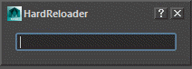

Hi folks,
Do you remember that little trick to quickly reload a python package?
Well, I use it all the time! so I made this little GUI helper. It's really simple, but makes my life much easier when it comes to test WIP code within Maya.

Installation:
Save the code below as hard_reloader.py into your Maya script directory
(or somewhere else in your PYTHONPATH).
import sys
from PySide import QtGui, QtCore
from shiboken import wrapInstance
from maya import OpenMayaUI
class HardReloader(QtGui.QDialog):
def __init__(self, *args, **kwds):
super(HardReloader, self).__init__(*args, **kwds)
self.setWindowTitle(type(self).__name__)
self.setAttribute(QtCore.Qt.WA_DeleteOnClose, True)
self.initUI()
def initUI(self):
self.ui_lineEdit = QtGui.QLineEdit(self)
ui_completer = QtGui.QCompleter ...
 Nowadays it's not that unusual having to work with scanned files (point
clouds), but most DCCs don't provide native support for those file formats
and we ended up whether using external converters or parsing ASCII files.
Nowadays it's not that unusual having to work with scanned files (point
clouds), but most DCCs don't provide native support for those file formats
and we ended up whether using external converters or parsing ASCII files.
social